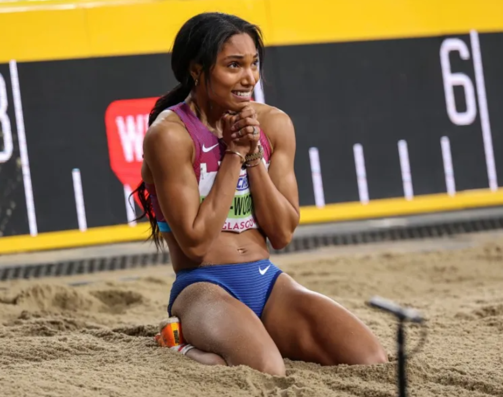
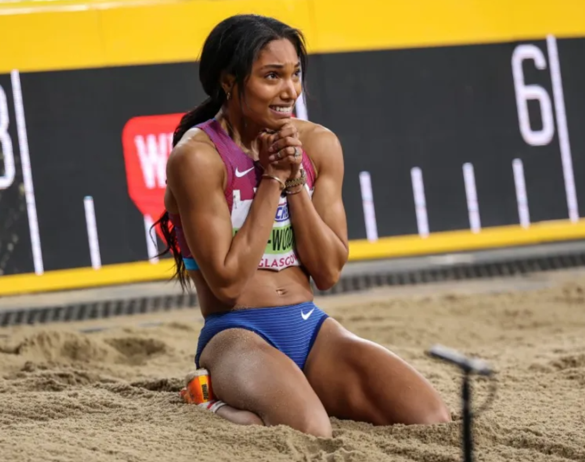
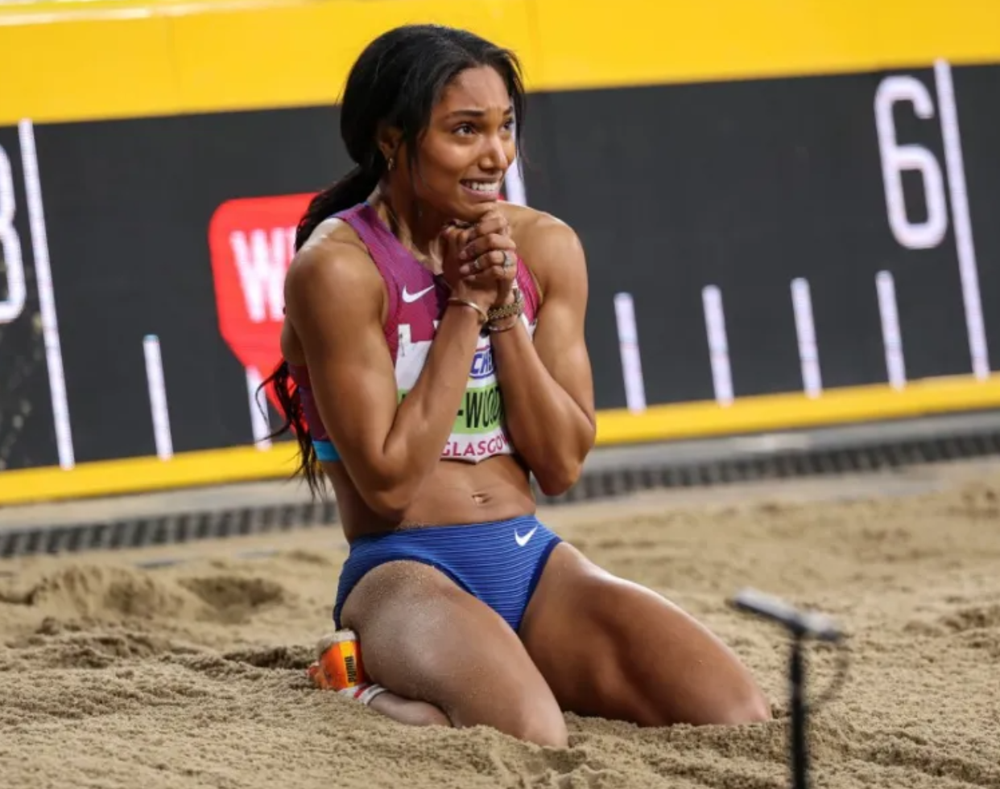

Gallery of Images
 


Within this profile, we will go through the life of Tara Woodhall Davis and the legacy that she is going to leave behind her. In this profile we will go through her colliagte career then explore her professional career. Finally this profile will go through all her medals and awards that she has won through the way.
For her freshman year of college, Tara Davis went to the University of Georgia. There she ran a 60m hurdles time of 7.98 seconds at her NCAA Indoor Track and Field Championships, this time ended up breaking Klaudia Siciarz’s under 20 world record. However, after one year, Tara Davis entered the transfer portal and transferred to the University of Texas. Due to NCAA transfer rules, she was not allowed to perform in the 2019-2020 track and field season. However, in 2021 Davis jumped 7.14m or 23 ft and 5 in at the Texas Relays in Austin Texas ultimately setting the national collegiate record and putting her in the top 30 collegiate Long Jumpers of all time.
In 2020 Davis qualified for the Summer Olympics by placing second in the Olympic trials with a jump of 7.04 m or 23 ft 1 in. Later on that year she placed sixth in the Olympic finals with her best jump being 6.84m or 22 ft 5.25 in. Three years later she won the USA Indoor Track and Field Championships with a jump of 6.99 meters (22ft 11in). Unfortunately, this title was taken away from her as a urine sample tested her cannabis metabolite levels higher than the allowed NCAA limit. This suspension was later reduced to 30 days due to her completion of a substance abuse program. Not letting the suspension affect her, later that year she won second place at the 2023 World Athletics Championships by jumping 6.91m or 22ft 8in. Then in 2024 she won the Summer Olympics in Paris with a jump of 7.10 m or 23 ft and 3.5in, in addition to winning gold in the 2024 World Athletics Indoor Championships with a distance of 7.07 m or 23 ft 2.25in. Due to her high velocity of gold medals in her 2024 season she was nominated for her first World Athletics Award. During her off season and in between her rigorous meet and practice schedule she also is an assistant coach for Kansas State University track and field. Additionally, she had a sponsorship from lululemon but just recently announced her new partnership with Nike.
Visit Tara Davis Woodhall's Team USA Profile!

"MY MO IS TO HAVE FUN!" - TARA DAVIS WOODHALL